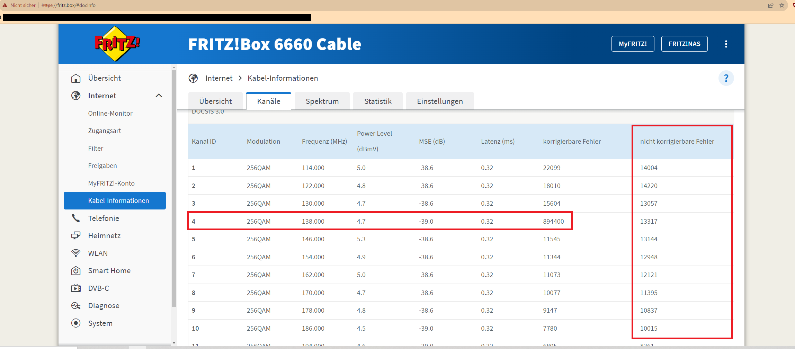
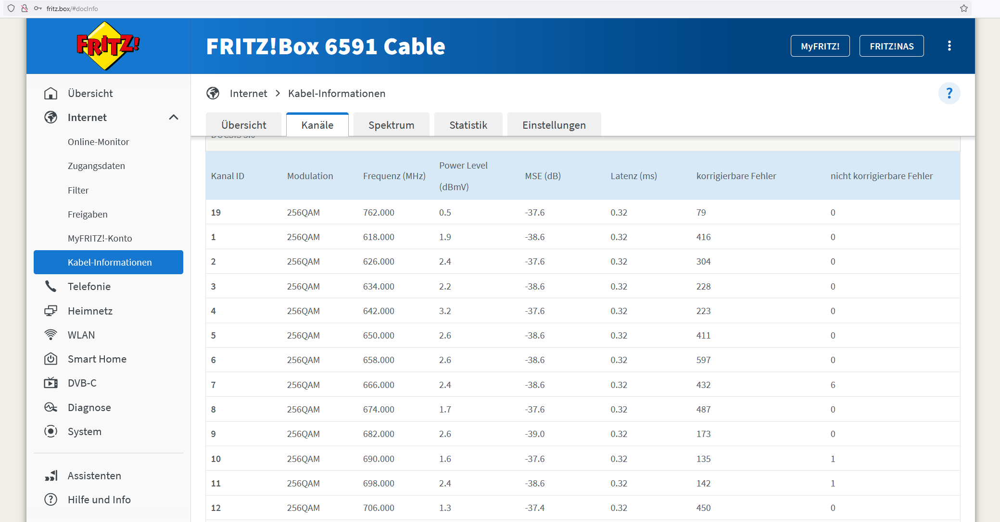

Kabelanschluss mit schlechten Werten aber bei Magenta alles ok?
Röbi
Hallo zusammen,
aktuell helfe ich meiner Freundin, dass sie mal gescheites Intrenet bekommt, aber langsam bin ich mit meinem Latein am Ende. Am Anfang dachte ich, dass einfach nur das WLAN schlecht ist, aber seht selbst:
1) Ab und zu WLAN Probleme (sporadisch stockende Verbindung/instabile Verbindung) und generell nur 60% Geschwindigkeit auf der 100er Leitung-> Magenta bietet Routertausch auf die neue Magenta Box mit WiFi 6, aber sagt dass die Leitung soweit gut ist
2) Weiterhin WLAN Probleme, Geschwindigkeit unverändert -> Magenta möchte, dass wir den neuen Router 1x neu anschließen
3) Weiterhin WLAN Probleme, Geschwindigkeit unverändert -> Magenta rückt endlich eine Fritzbox raus
4) Fritzbox zeigt absolut katastrophale Werte für den Kabelanschluss -> Magenta Kundenservice fragt Experte, sagt "bei uns ist alles ok" und bittet mich darum via Kontaktformular ein Foto/Screenshots hochzuladen... leider finde ich nicht das passende Kontaktformular... daher bin ich hier, aber seht selbst:

Das ist ein Screenshot ca. 72 Stunden nach Inbetriebnahme der Fritzbox bei meiner Freundin. Es handelt sich hier auch nicht um einen "einmaligen" Ausreißer -> das protokolliert durchgehend Fehler und Kanal 4 ist ziemlich hinüber.

Hier ein Screenshot von meiner Fritzbox an meinem Anschluss (nicht Magenta!) in einem ähnlichen Zeitraum. Man sieht da schon extreme Unterschiede.
Meine Frage jetzt:
1) Ist das normal, dass die Fritzbox bei Magenta so viele Fehler wirft?
2) Wo ist das Kontaktformular, wo ich die Screenshots hochladen soll? Nach 10 Minuten suchen hab ich es leider nicht gefunden
2) Wie kriege ich den Kundenservice dazu, dass ein Techniker vorbeikommt und die Leitung von der Wohnung zum Verteiler und vom Verteiler zur Kopfstelle durchmisst ggf. einstellt?
Noch ein paar Daten zum Anschluss:
Graz 8010, in einem Neubau (ca. 5 Jahre alt), Verfügbarkeitscheck sagt sogar Gigakraft 500 möglich
Die Fritzbox 6660 hat im allgemeinen Probleme was Verbindungen - egal ob per Lan oder Wlan - die wohl auch AVM bekannt sein dürften.
Deine genannte Fritzbox 6591 Cable kann bei Magenta in AT nicht genutzt werden, da Magenta "nur" die 6660 Cable im Portfolio führt, und keine Privaten zulässt mangels Konfiguration.
Wenn, dann würde ich zur Fiber Box 1 oder 2 greifen wenn Wlan 6 noch kein Thema sein sollte, den auch die Neue Home Box Fiber ist nicht ganz problemlos.
Die Fiber Box 1 oder 2 wird - wobei die 2 auch schon den Standard docsis 3.1 hat - nur auf Kundenwunsch per Technikline zugesendet.
Im Magenta Shop wird diese Fiber Box 1/2 und Fritzbox 6660 nicht mehr ausgegeben.
Wende dich nochmal an die Technikline 0676 200 7777, den da kann der Leitungswert auch aus der Ferne eruiert werden, und auch ob mit dem Modem was nicht stimmt.
vielen Dank für die Antwort mit dem Link! Das hat mir schon sehr weitergeholfen.
Kurz zu deinen Tipps...
Zitat
Die Fritzbox 6660 hat im allgemeinen Probleme was Verbindungen - egal ob per Lan oder Wlan - die wohl auch AVM bekannt sein dürften.
Das ist so nicht korrekt. Die Fritzboxen zählen in der Regel zu den deutlich besseren Geräten als die Standard Router. Hier sind mehr Einstellmöglichkeiten und mehr Daten für den erfahrenen Nutzer zu finden. Es gibt ziemlich positive Tests und auch Nutzererfahrungen. Es kann natürlich sein, dass Magenta mit den Fritzboxen Probleme hat, aber das liegt dann eher am Provider. Ich nutze in Deutschland seit Jahren eine Fritzbox 6591 cable und habe bei Vodafone, später PYUR nur positive Erfahrungen gemacht.
Zitat
Deine genannte Fritzbox 6591 Cable kann bei Magenta in AT nicht genutzt werden, da Magenta "nur" die 6660 Cable im Portfolio führt, und keine Privaten zulässt mangels Konfiguration.
Ja das habe ich auch schon erfahren. Leider muss da erst der Gesetzgeber eingreifen damit man freie Routerwahl hat. In Deutschland geht das ja, aber in Österreich nicht. Die Standards wie Docsis und die ganze eingekaufte Hardware sind aufeinander kompatibel, aber Magenta geht hier den einfachen Weg.
Zitat
Im Magenta Shop wird diese Fiber Box 1/2 und Fritzbox 6660 nicht mehr ausgegeben.
Wir haben die Fritzbox aus einem Magenta Shop - anscheinend gibt es in Ausnahmefällen noch welche, die man an Privatkunden rausgibt. Für Business Kunden ist sie wohl nach wie vor im Einsatz.
Zitat
Wende dich nochmal an die Technikline 0676 200 7777, den da kann der Leitungswert auch aus der Ferne eruiert werden, und auch ob mit dem Modem was nicht stimmt.
Wie in meinem ersten Beitrag erwähnt, habe ich die Hotline (und dort auch die Technikabteilung) mehrfach kontaktiert. Dort können keine Probleme festgestellt werden, wobei ich ja jetzt (dank Fritzbox) schwarz auf weiß habe, dass die Leitung sehr viele Fehler hat. Die Standard Lösungsansätze habe ich ja auch brav mitgespielt, aber gebracht haben sie bis jetzt recht wenig.
Das ist so nicht korrekt. Die Fritzboxen zählen in der Regel zu den deutlich besseren Geräten als die Standard Router. Hier sind mehr Einstellmöglichkeiten und mehr Daten für den erfahrenen Nutzer zu finden. Es gibt ziemlich positive Tests und auch Nutzererfahrungen. Es kann natürlich sein, dass Magenta mit den Fritzboxen Probleme hat, aber das liegt dann eher am Provider. Ich nutze in Deutschland seit Jahren eine Fritzbox 6591 cable und habe bei Vodafone, später PYUR nur positive Erfahrungen gemacht.
Da gebe ich dir Recht was die AVM Geräte betrifft, den diese sind in der Tat bessere Geräte.
Nur trifft dies eher auf die Modem/Router auf DSL-Basis zu, aber leider stiefmütterlich bei den Kabel Modellen.
Hatte selber die Fritzbox 6660 in Verwendung gehabt, die nach kurzer Zeit auf die Home Box Fiber getauscht werden musste und wurde, weil diese 6660 auch nicht die Bandbreite lieferte die Sie sollte.
Am 12.9.2023 um 21:40 schrieb Röbi:
Wir haben die Fritzbox aus einem Magenta Shop - anscheinend gibt es in Ausnahmefällen noch welche, die man an Privatkunden rausgibt. Für Business Kunden ist sie wohl nach wie vor im Einsatz.
Das dürfte auch korrekt sein, das diese 6660 auch im Magenta Shop (nicht in allen) ausgegeben wird, wenn man schon eine hatte und auf Wusch wieder auf diese ausgetauscht werden kann.
Bei Neu Abschluss wird nur noch die Neue Home Box Fiber ausgegeben.
Die Fiber Box 1/2 wird nur noch über die Technikline ausgegeben, wenn dies der Kunde explizit wünscht, und ausreichend Kontingent vorhanden ist, da diese Modelle Auslauf Modelle sind.
Wünsche dir dennoch, dass dir dazu weitergeholfen werden kann, den normal sind diese Absturzwerte nicht.
Jonathan Dorian
Am 12.9.2023 um 21:40 schrieb Röbi:
vielen Dank für die Antwort mit dem Link! Das hat mir schon sehr weitergeholfen.
Hey, bitte halte uns am Laufenden was hier rausgekommen ist und was der Fehler war. Das wäre super!
LG JD.
HilfsbereiterKerl
Unkorrigierbare Fehler sind nicht gleichzustellen mit einem zu niedrigen oder zu hohen Pegel beim Kabel. Meistens liegt es nur an dem "Antennenkabel" (Coax-Kabel von der Dose zum Modem). Teste es evtl. mit einem anderen Kabel, gibt es kostenlos zum Tausch via Shop oder Technik-Hotline. Falls das keine Besserung bringt, kann ein kostenloser Servicetermin gebucht werden über die Technik
{kind=link}